VMware Explore 2026 | My Eperience
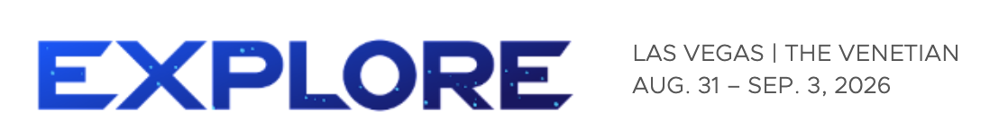
VMware Explore 2026 Recap: Hackathon, Hands-on Labs, Customers, AI, the People Who Make It Worthwhile, more...
VMware Explore is always one of the highlights of my year. It is a chance to reconnect with people, meet readers, work directly with customers, and spend the week having the kind of hands-on conversations that make this community so valuable. This year was no exception.
Saturday:
The week started smoothly with a nonstop Southwest flight from BWI to Las Vegas on Saturday, with no delays. Thank you, Southwest. I stayed at the Venetian. That evening, I had dinner with Cosmin Trif, which was a perfect way to set the tone for the week ahead.
Sunday:
Sunday was focused on Hands-on Labs preparation. We spent the day getting everything ready, checking in with the team, and making sure the expert-led workshops (ELWs) were in good shape for the week.
Hands-on Labs Command Center:
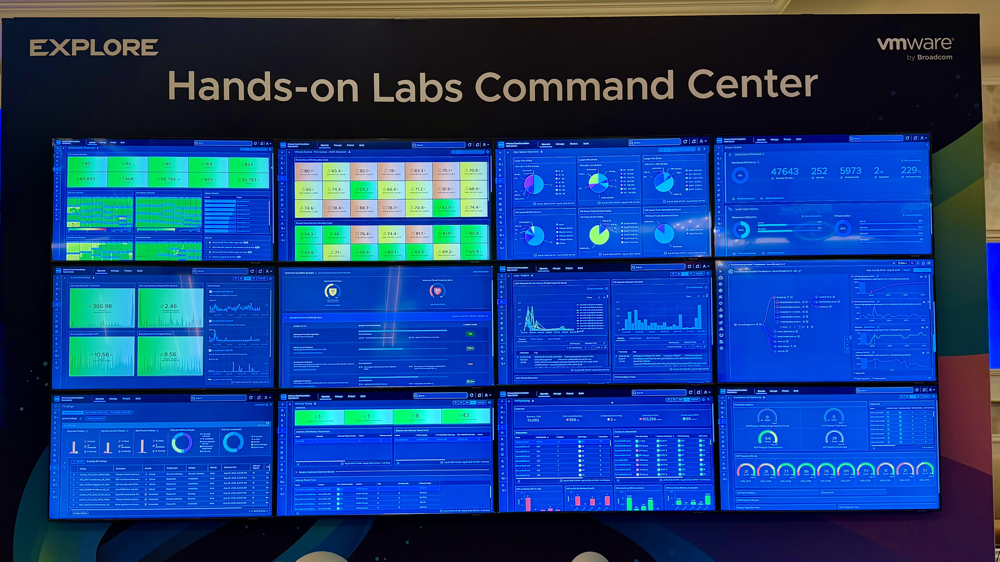
HOL Team:
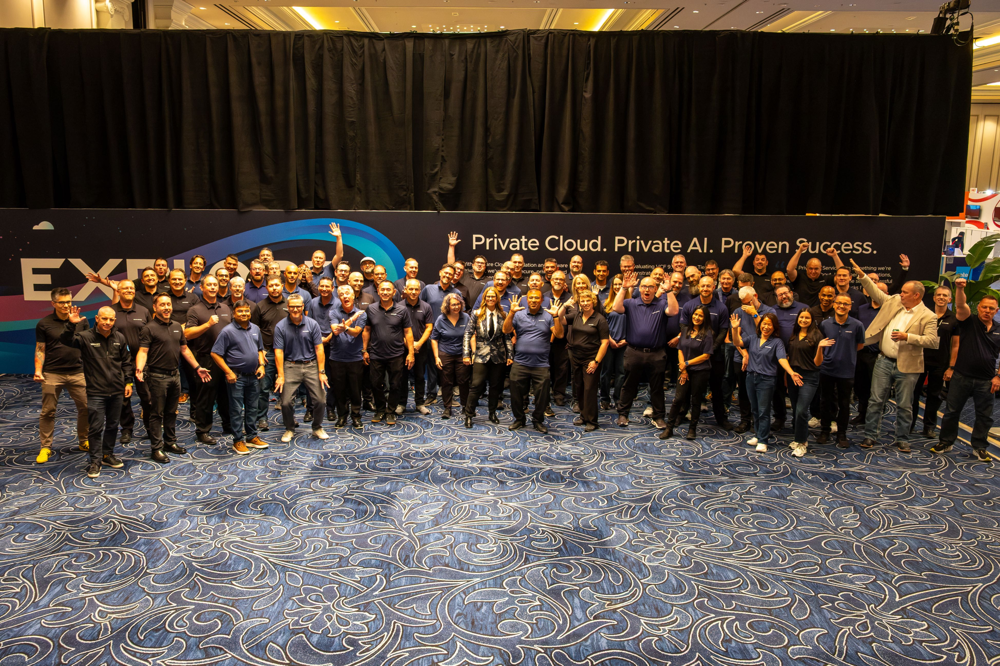
Sunday evening, I had dinner at Bouchon. Always great food at Bouchon. Here is a pic with Cosmin Trif and Brock Peterson before dinner.
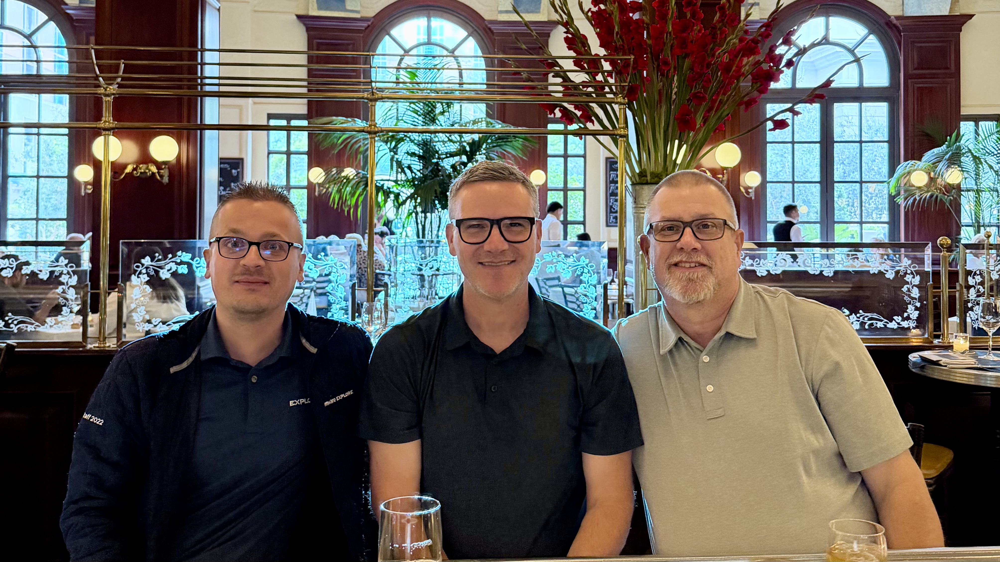
Monday:
On Monday, I started in the Hands-on Labs, helping customers find sessions that matched their goals. I also had two excellent customer meetings, which I was able to line up with William Lam and Frank Denneman. Both conversations were exactly the kind of technical, practical discussions that make VMware Explore so useful.
Monday night was one of my favorite parts of the week: The Hackathon 🥼
To help start the Hackathon, I did a presentation and shared how I have been using AI in my own workflow. I walked through examples from Claude and OpenAI Codex, showed a few screenshots of the applications that I created using AI, and talked about how these tools are becoming part of the way I think through ideas, build faster, and explore new approaches.
For the Hackathon itself, I pitched an idea I have wanted for years: a cross-platform app similar in purpose to RVTools, but not limited to Windows. We focused on the product and the workflow more than the code. In three hours, we had the same code base running on my Mac and a Windows laptop. That was a great moment.
We ended up taking third place 🥉, which made the night even better.
Links to some nice blogs and a video from people who were on my team:
- Lukas Klinger | Blog Post
- Daniel Keer | Blog Post
- Daniel Keer | YouTube Video
- Dale Hassinger | Blog Post
Great blogs and video. Please take the time to read and watch. Worth your while.
Hackathon Event Pics:
Proper Hackathon Attire:
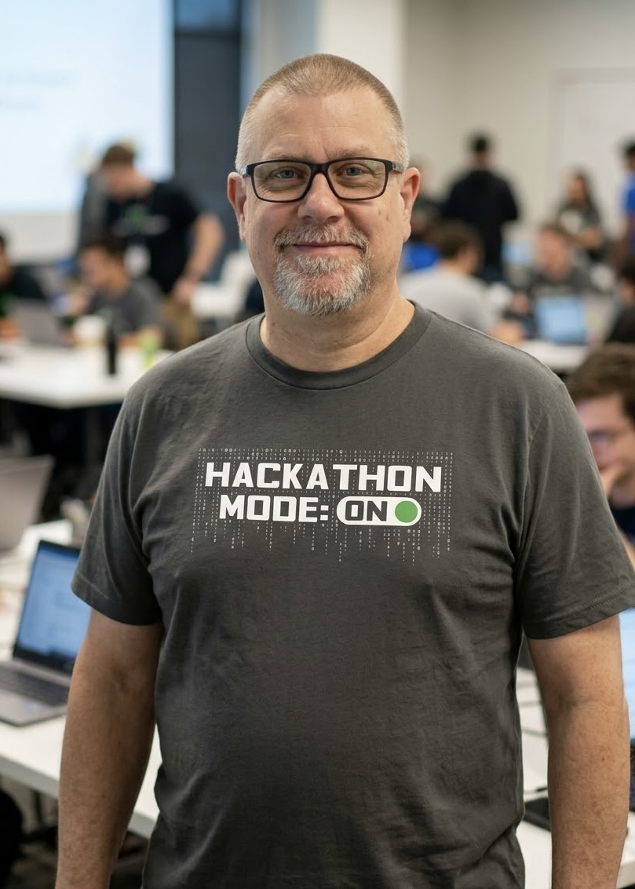
Dale Hassinger Presentation:
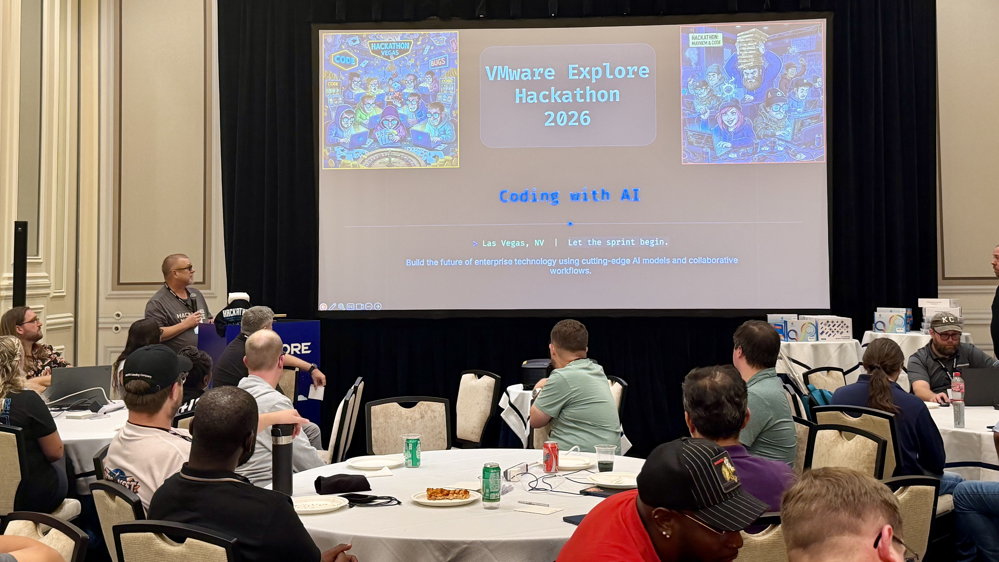
Bob Plankers Presentation:
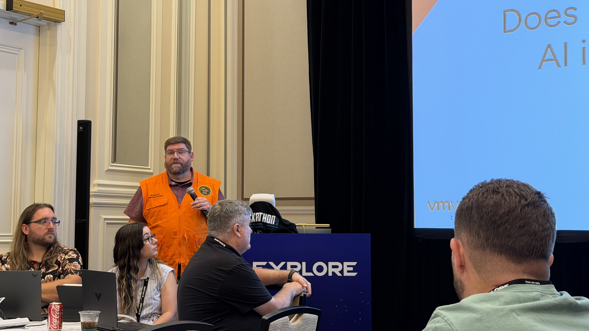
Hackathon Group Photo:
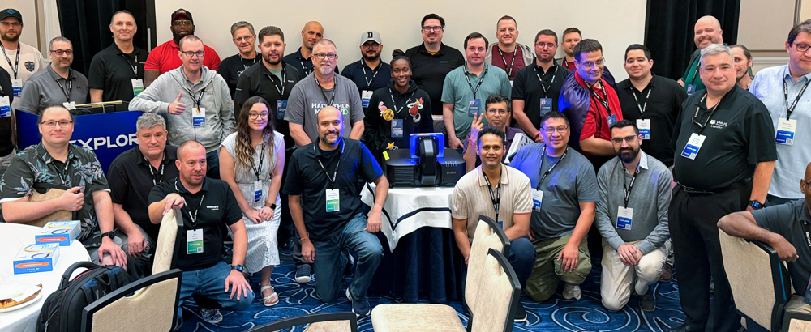
Hackathon Project Screenshots:
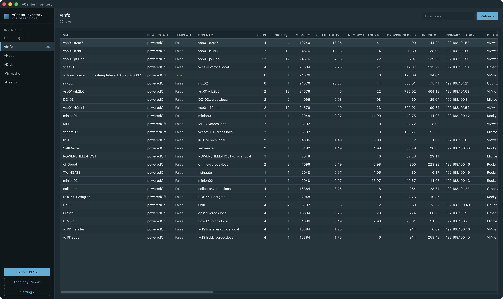
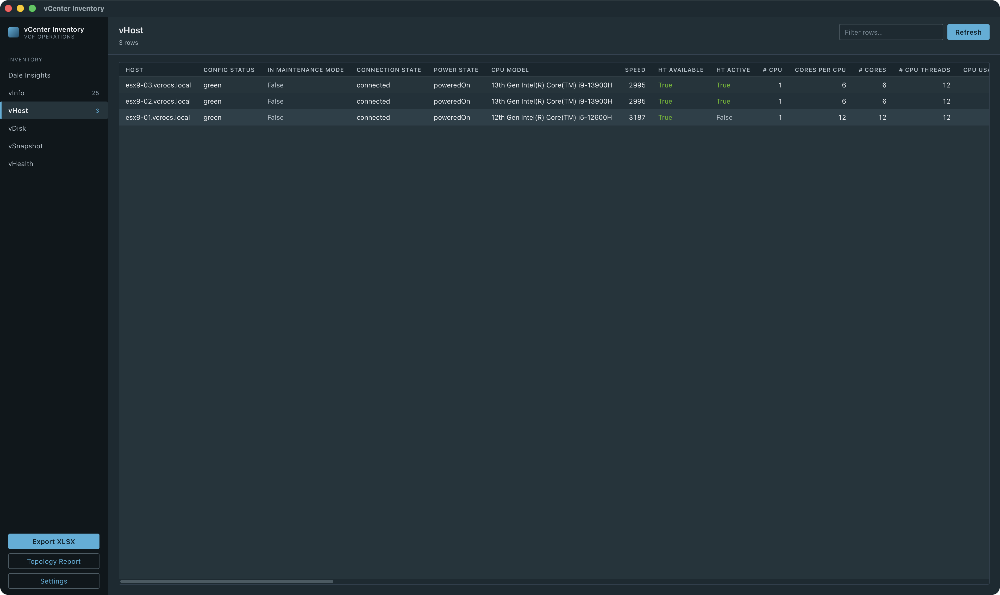
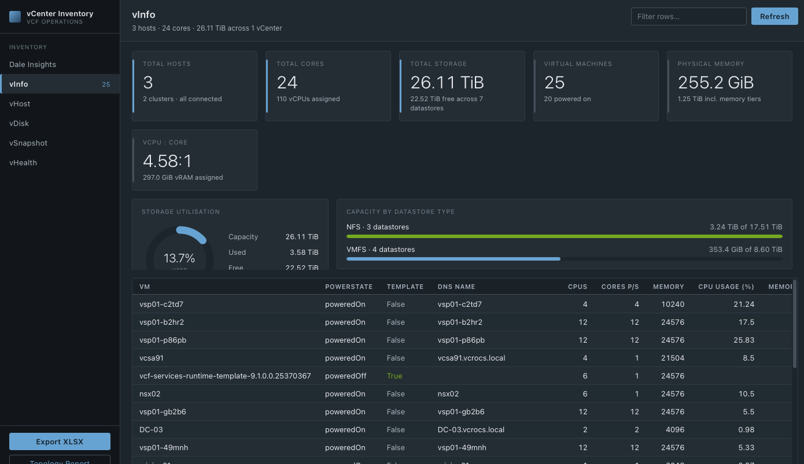
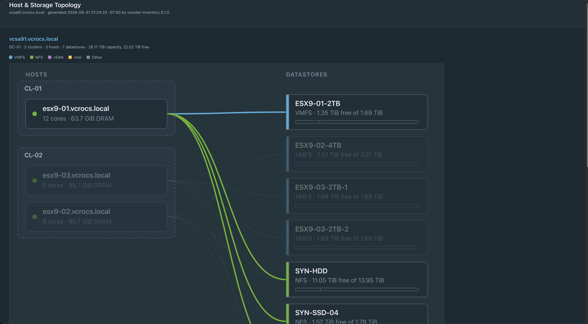
Tuesday:
Tuesday brought more time in the Hands-on Labs, followed by my quick talk in the Code Theater. It ended up being standing room only, which was flattering. Afterward, a few people came up to say they read my blog and use some of that work in production. That was humbling to hear. It is exactly the kind of feedback that keeps me writing.
Session Information:
Advanced Management Pack Strategies for VMware Cloud Foundation Operations [CODEQT1201LV]
Pics from my session:
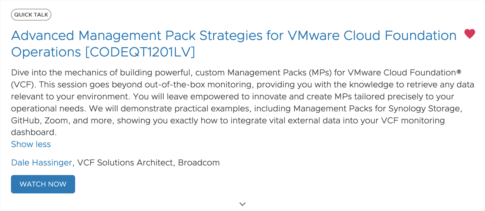
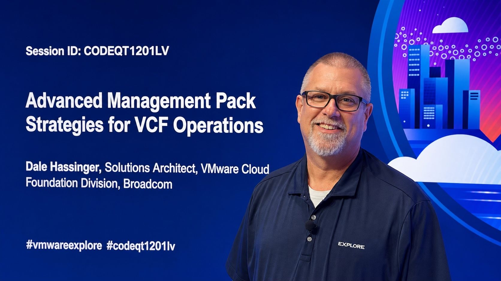
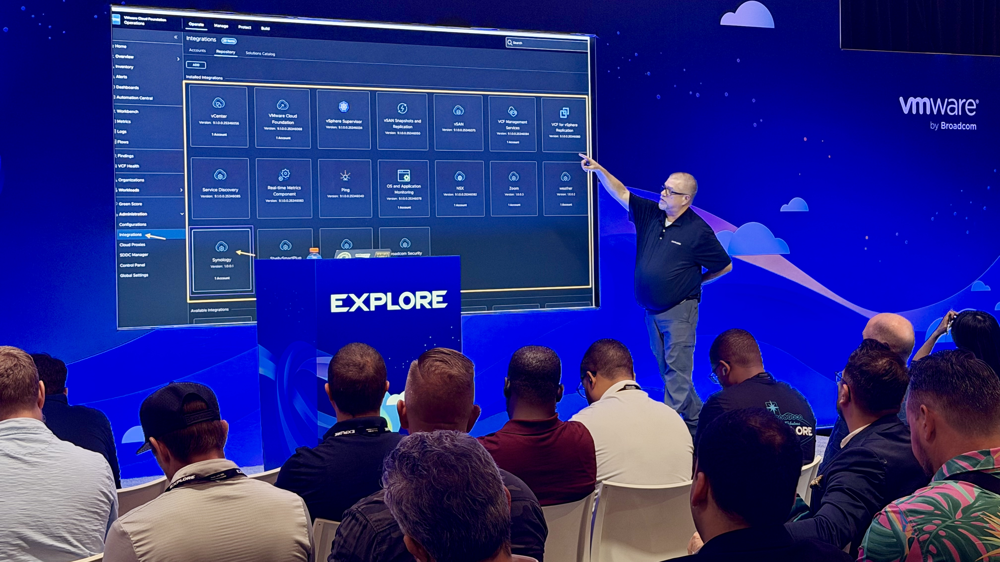
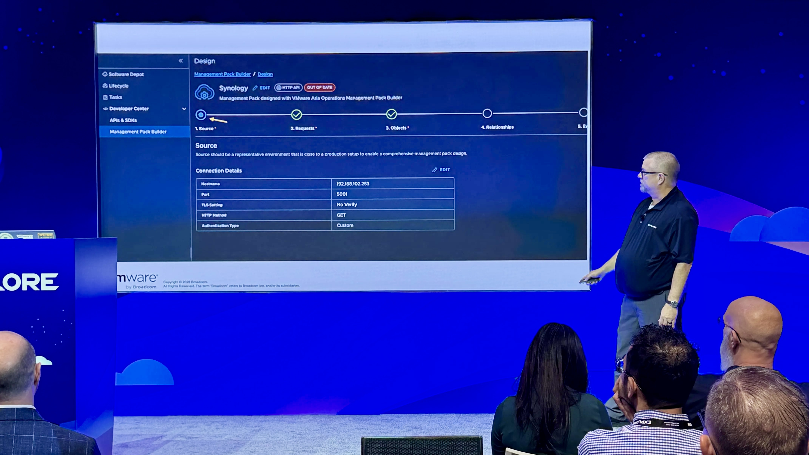
Session Survey Feedback:
- Very well explained. Enjoyed the relatable Synology setup demo.
- Great thought-provoking ideas.
- Short and super helpful.
- Didn't realize it was that easy.
- Super engaged and knowledgeable.
- Great demo and examples.
- Dale always provides excellent and detailed walkthroughs and is a trusted resource in our community!Wednesday:
Wednesday was another full day in the labs, along with my expert-led workshop on the VCF Upgrade Planner and PowerCLI.
vSphere 9.1 Hardware ROI, Memory Tiering & Performance [ELW-HOL-2706-02-VCF-L]:
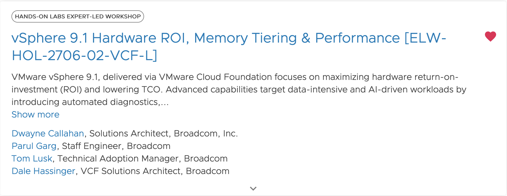
There were also roadmap discussions, more customer conversations, and dinner with a couple of co-workers to close out the day. We don't get to see each other often in person, so the time together is always good.
Thursday:
Thursday started early with a 6:50 AM flight from Las Vegas back to BWI. I left the hotel around 4:30 AM and had no problem getting an Uber that early in the morning.
Travel went smoothly again, with no issues along the way. Thank you to Southwest for another good flight and to the Uber driver who picked me up at 4:30 AM and got me to the airport on time.
From a travel standpoint, the week could not have gone much better.
Thoughts:
But what sticks with me most is not the flights, the sessions, or even the Hackathon result. It is the people.
Customers learning something new. Readers taking the time to stop and say thanks. Teammates putting energy into every lab, every conversation, and every late night. Those are the moments that make the week matter.
Thank you to everyone who stopped by, asked a question, joined a session, attended a lab, or shared a few minutes of your time. I appreciate every bit of it.
Now it is time to start thinking about next year.
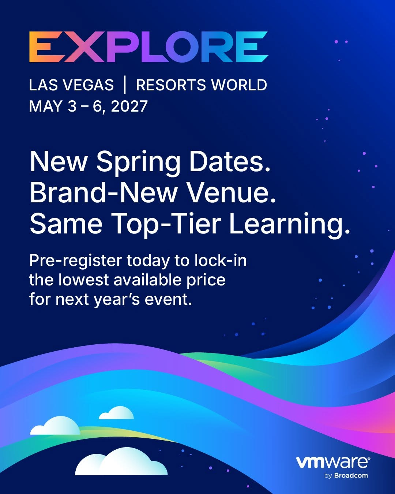
Unexplored Territory Podcast:
While at VMware Explore, I had the opportunity to record a podcast segment with Duncan Epping about the VMware Explore Hackathon. We talked about the Hackathon experience, what our team worked on, and some of the ideas behind our project.
As a long-time listener of the Unexplored Territory Podcast, it was an honor to be asked to join Duncan and record a segment. I’ve listened to the podcast for years, so being on the other side of the microphone was a great experience.
You can listen to the podcast here:
#126 - VMware Explore Las Vegas 2026!
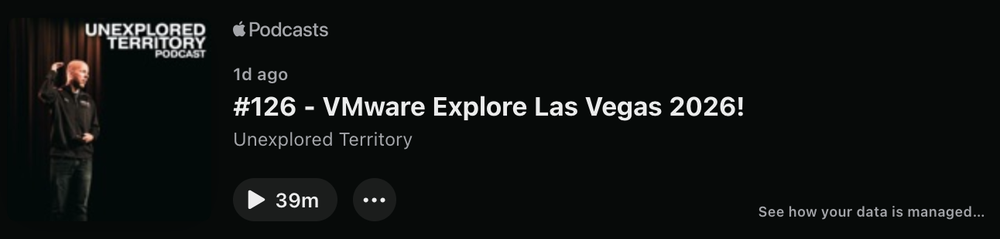
Additional VMware Explore 2026 Pics:
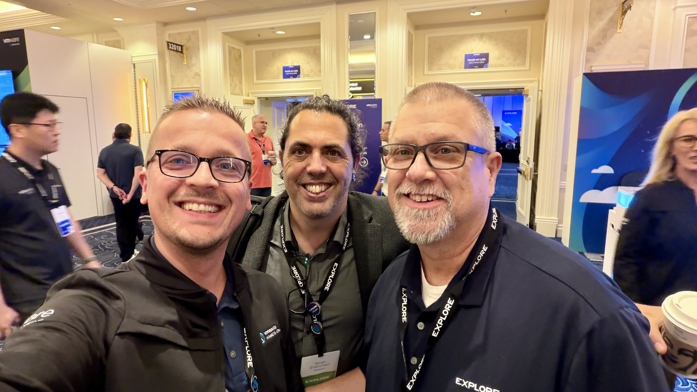
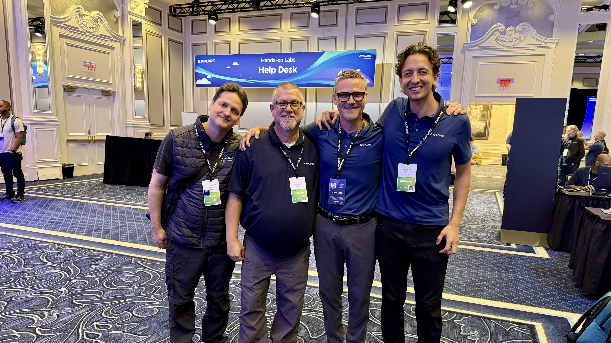
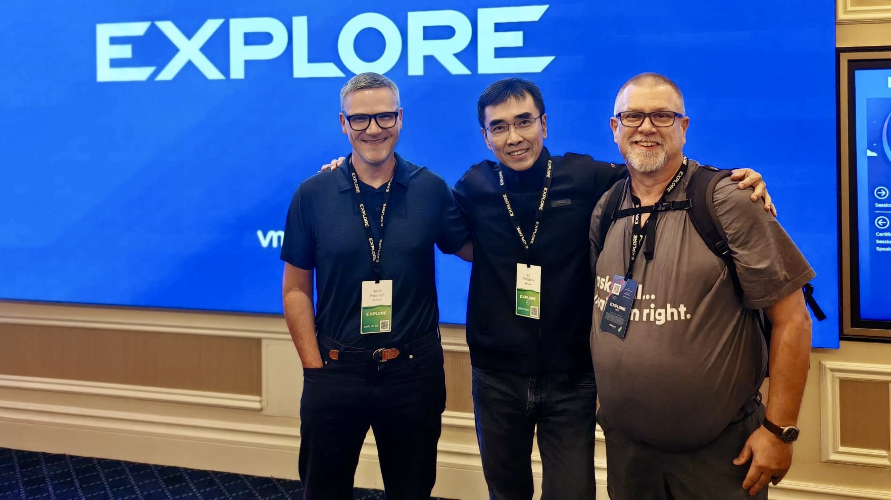